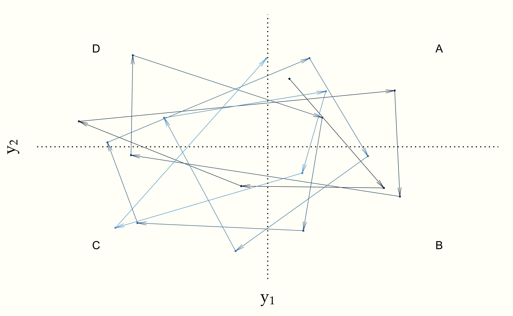

Monte Carlo methods223 Monte Carlo methods are so-called because of
the Monte Carlo Casino (shown below), located in the Principality of
Monaco.
© Z.graber,
own work, CC-BY-SA 3.0 simply use simulation to calculate
numerical solutions to definite integrals, usually in high
dimensions.224 The book could’ve been subtitled “A Monte Carlo
approach,” but like putting “Bayesian” before “statistics”, it’s
needlessly obscure nomenclature. We have seen numerous examples in
earlier chapters.
When we can simulate a sample of independent draws \(\theta = \theta^{(1)}, \ldots, \theta^{(M)}\) according to the posterior \(p(\theta \mid y)\), we can use them to calculate parameter estimates, event probabilities, and other expectations. The convergence of such estimates is governed by the central limit theorem and proceeds at an expected error rate of \(\mathcal{O}(\frac{1}{\sqrt{M}}).\)225 The reduction in error is all relative to the scale of the quantity being sampled. This rate is manageable in most circumstances, but cannot be used for high precision applications because the number of iterations required for a given number of decimals of precision grows exponentially.226 Each additional decimal digit requires the error to be reduced by a factor of 10, and thus requires 100 times as much computation, because \(\frac{1}{\sqrt{100}} = \frac{1}{10}\).
For most statistical models we want to fit for applications, no methods exist for taking independent draws from the posterior. What we can do in most cases is create a Markov chain \(\theta = \theta^{(1)}, \ldots, \theta^{(M)}\) of draws, the stationary distribution of which is the posterior \(p(\theta \mid y)\) of interest. We then use the elements of the chain \(\theta\) to estimate expectations and quantiles in the same way as the independent sample from the posterior. This is the basis of Markov chain Monte Carlo (MCMC) methods.
As we saw in the chapter on finite Markov chains, the rate of convergence varies depending on how much each draw \(\theta^{(m + 1)}\) depends on the previous draw \(\theta^{(m)}\).227 If the \(\theta^{(m)}\) are independent, the central limit theorem governs the convergence.
The definitions we have already made for Markov chains apply to chains with continuous values. A random process $Y = Y_1, Y_2, , $ has discrete time steps but may have discrete or continuous values or even multivariate values, which may themselves be discrete, continuous, or a mixture of the two. Such a process is a Markov chain if for all \(t\), and all states \(y_1, \ldots, y_{t+1}\),
\[ p_{Y_{t+1} \mid Y_t}(y_{t+1} \mid y_t) \ = \ p_{Y_{t+1} \mid Y_t, Y_{t-1}, \ldots, Y_1}(y_{t+1} \mid y_t, y_{t-1}, \ldots, y_1). \]
We are also assuming that our Markov chains are time homogeneous in that the conditional probability distribution of the next state is always the same. That means that for all \(t'\), the conditional distribution of the next element at \(t\) is the same as that at \(t'\),
\[ p_{Y_{t+1} \mid Y_t} \ = \ p_{Y_{t' + 1} \mid Y_{t'}}. \]
All of the Markov chains we will consider will have transitions that are time homogeneous.
To simplify notation, we will write \(p_t\) for \(p_{Y_{t+1} \mid Y_t}\)
Let’s look at univariate continuous Markov chains first. Such a chain has real-valued states \(Y_t \in \mathbb{R}\). Let
\[ \tau(u, v) = p_{Y_{t+1} \mid Y_{t}}(v \mid u) \]
be the conditional distribution of the next state \(v\) if the current state is \(u\), where \(u, v \in \mathbb{R}\). We will call \(\tau\) the transition distribution of the chain.
A density function \(\pi(u)\) for \(u \in \mathbb{R}\) is the density function of the stationary distribution for transition function \(\tau(u, v)\) if
\[ \pi(u) \ = \ \int_{\mathbb{R}} \, \pi(v) \times \tau(v, u) \, \mathrm{d}v. \]
In words, \(\pi\) is a stationary density if its value at a point \(u\) is the the average transition probability \(\tau(v, u)\), where the average is weighted by the stationary density of \(v\).
In order to sample from the posterior of a model with posterior density \(p(\theta \mid y)\) with parameters \(\theta\) conditioned on observed data \(y\), we will construct Markov chains for which
\[ \pi(\theta) = p(\theta \mid y). \]
We can also think of continuous Markov chains in terms of volumes. No matter how the space is partitioned into disjoint volumes, the probabilities of being in a volume and transitioning between volumes defines a discrete Markov chain.228 The stationary probability of a volume \(U \subseteq \mathbb{R}^N\) is just \[\pi(U) = \int_U \pi(u) \mathrm{d}u.\] and the probability of transitioning to volume \(V \subseteq \mathbb{R}^N\) conditioned on being at state \(u \in \mathbb{R}^N\) is given by \[\tau(u, V) = \int_V \pi(v) \tau(u, v) \mathrm{d}v.\]
The notion of reversibility extends to continuous chains, where \(\tau\) is said to be reversible with respect to \(\pi\) if for all \(u, v\),
\[ \pi(u) \times \tau(u, v) = \pi(v) \times \tau(v, u). \]
If the transition function of a Markov chain is reversible with respect to \(\pi\), then \(\pi\) is the stationary distribution for the chain. The other way around, not every transition function with a stationary distribution is reversible.
Continuous chains may exhibit periodicity just like discrete chains. The idea is that it revisits volumes in a predictable way. For example, consider a chain where the space has been divided into four non-overlapping regions \(A, B, C, D\), and where
\[ \begin{array}{rcl} \mbox{Pr}[Y_{t+1} \in B \mid Y_t \in A] & = & 1 \\[4pt] \mbox{Pr}[Y_{t+1} \in C \mid Y_t \in B] & = & 1 \\[4pt] \mbox{Pr}[Y_{t+1} \in D \mid Y_t \in C] & = & 1 \\[4pt] \mbox{Pr}[Y_{t+1} \in A \mid Y_t \in D] & = & 1 \end{array} \]
We can easily simulate such a chain by taking \(A, B, C, D\) to be unit boxes in each quadrant of the real plane, starting in the positive (upper right) quadrant and moving clockwise. The Markov chain may be simulated as.
y[1] <- (uniform_rng(0, 1), uniform_rng(0, 1))
for (t in 2:T)
if (y[t - 1] in A)
y[t] = uniform_rng(B)
else if (y[t - 1] in B)
y[t] = uniform_rng(C)
else if (y[t - 1] in C)
y[t] = uniform_rng(D)
else
y[t] = uniform_rng(A)Let’s plot that for \(T = 20\) steps.
Figure 18.1: Plot of 20 steps of a periodic continuous Markov chain. Each value is drawn from a unit quadrant starting from the upper right (positive) quadrant and proceeding in a clockwise order.
We say that a Markov chain \(Y = Y_1, Y_2, \ldots\) is periodic if there are volumes \(A_1, \ldots, A_K \subseteq \mathbb{R}^N\) such that the chain moves deterministically from \(A_1\) to \(A_2\) to \(A_3\) and finally from \(A_K\) back to \(A_1\). In symbols, a chain is defined to be periodic if
\[ \mbox{Pr}[Y_{t + 1} \in A_{k + 1} \mid Y_t \in A_k] = 1 \ \mbox{if} \ 1 \leq k < K \]
and
\[ \mbox{Pr}[Y_{t + 1} \in A_1 \mid Y_t \in A_K] = 1. \]
Roughly speaking, a Markov chain on a continuous space is irreducible if every subset of nonzero volume has a positive probability of eventually being visited from any other point in the space.229 In general, a set \(A \subseteq \mathbb{R}^N\) has hypervolume \[\mbox{vol}(A) \ = \ \int_A 1 \, \mbox{d}u \ = \ \int_{\mathbb{R}^N} \mathrm{I}[u \in A] \, \mathrm{d}u.\]
A Markov chain is ergodic if it is aperiodic and irreducible. Ergodicity is important because it ensures that we converge to the stationary distribution if there is one.
Fundamental theorem of Markov chain Monte Carlo. If the discrete time, time-homogeneous Markov chain \(Y = Y_1, Y_2, \ldots\) with \(Y_t \in \mathbb{R}^N\) is ergodic and has stationary distribution \(\pi\), then
\[ \lim_{t \rightarrow \infty} \mbox{Pr}[Y_t \in A \mid Y_1 = y] \ = \ \int_{\mathbb{R}^N} \mathrm{I}[y \in A] \times \pi(y) \, \mathrm{d}y. \]
Furthermore, for well-behaved functions \(f\),230 The well-behavedness required here is convergence of the absolute expectation, \[\int_{\mathbb{R}^N} \left| f(y) \right| \times \pi(y) \ \mathrm{d}y < \infty.\]
\[ \lim_{T \rightarrow \infty} \frac{1}{T} \sum_{t=1}^T \, f(Y_t) \ = \ \int_{\mathbb{R}^N} f(u) \times \pi(u) \, \mathrm{d}u. \]